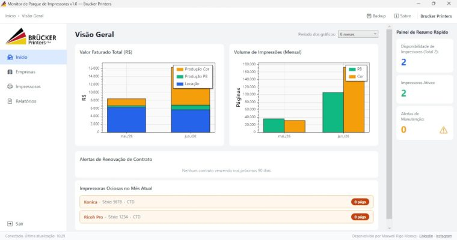

Brucker Printers · Sistema sob medida Entregue
O relatório mensal da Brucker saiu da planilha.
Situação
Todo mês, a mesma rotina: abrir o Excel, conferir a leitura de cada equipamento, calcular o que cada cliente devia e montar o relatório à mão.


O problema.
A Brucker administra parques de impressoras para empresas. O modelo é conhecido no setor: o equipamento fica com o cliente e a cobrança é pelo volume impresso, medido no contador de cada máquina.
Isso significa um ciclo mensal fixo — coletar a leitura de cada equipamento, calcular a diferença em relação ao mês anterior, aplicar a regra de cobrança de cada contrato e emitir o relatório. Multiplicado por muitos equipamentos e vários clientes, é um volume grande de conta.
Tudo isso rodava em planilha. Funcionava, no sentido de que os relatórios saíam. Custava caro em três frentes: tempo, porque consumia horas de alguém sempre nos mesmos dias do mês; erro, porque cálculo à mão em planilha grande erra, e num modelo de cobrança por leitura um número errado significa cobrar a menos ou cobrar demais de um cliente; e dependência, porque a planilha estava na cabeça e na máquina de uma pessoa.
O que eu fiz.
Um sistema desktop em C# que recebe as leituras, guarda o histórico de cada equipamento, aplica a regra de cobrança do contrato e emite o relatório pronto, exportável em PDF e Excel.
O cadastro de equipamentos e de contratos deixou de viver numa aba de planilha e passou a ser dado estruturado, com o histórico de leituras preservado mês a mês. Isso é o que permite conferir um número do passado sem depender de quem estava lá.
A tela de visão geral existe por um motivo específico: destacar equipamento parado. Máquina que não imprime não fatura, e antes isso só aparecia quando alguém reparava numa linha zerada no meio da planilha.
O resultado.
Relatório mensal saiu da planilha manual.
O fechamento deixou de ser um trabalho de digitação e conferência e passou a ser uma conferência só. O cálculo é o mesmo todo mês, e é justamente por isso que ele não precisava de uma pessoa.
Ficha técnica.
| Cliente | Brucker Printers |
|---|---|
| Tipo | Sistema desktop, sob medida |
| Tecnologias | C#, .NET, WPF |
| Acesso | Sistema interno, sem endereço público |